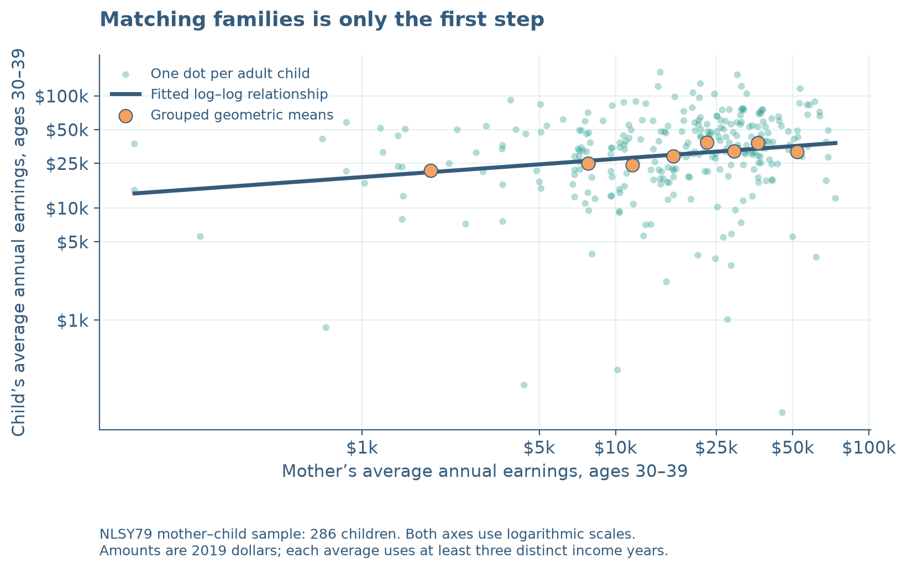
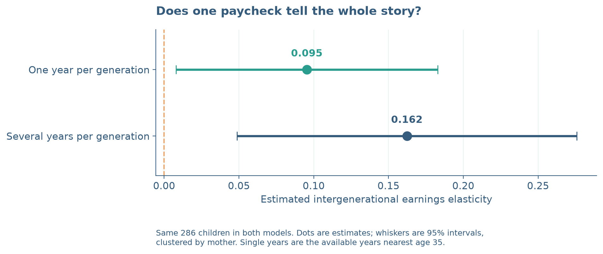
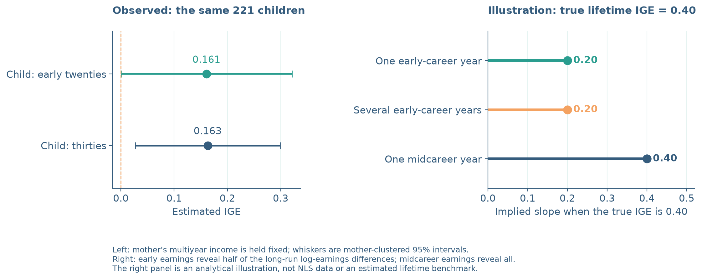

Is Your First Paycheck Your Economic Destiny?
Matching mothers and children with SQL—and learning when income tells the wrong story.
Would you judge a whole movie from its opening scene? An income recorded while someone is studying, changing jobs, or raising a child can be an equally misleading preview. How well do a mother’s earnings predict her child’s—and how much does the answer depend on which paycheck we measure?
SQL can identify a mother precisely; measuring her economic status is harder. This tutorial matches families and estimates intergenerational elasticity (IGE) using annual earnings near specified ages—not literal first paychecks.
1. Give every person the right key
I use the NLSY79 and its Child/Young Adult survey. The extracts contain 11,551 children and 4,943 corresponding mothers. A child’s C0000100 identifies the child; C0000200 identifies the mother and matches R0000100 in her file, as the NLS linkage documentation explains. Siblings share a mother ID, so the relationship is many-to-one.
Work from blog/posts/post6/. The snippets explain key steps, not a standalone script. After obtaining the extracts, run python code/analysis.py for the complete workflow and saved SQLite database; the README explains installation and data access.
First, read the two CSV files:
import sqlite3
import pandas as pd
children = pd.read_csv("data/raw/children.csv")
mothers = pd.read_csv("data/raw/mothers.csv")Expand the preparation to rename variables, check unique keys, and load SQLite tables before Step 2.
Show data preparation: rename, check, and load into SQLite
Run this once after reading the CSVs:
children = children.rename(columns={
"C0000100": "child_id", "C0000200": "mother_id",
"C0005700": "birth_year", "C0005400": "sex"
})
mothers = mothers.rename(columns={
"R0000100": "mother_id", "R0000500": "birth_year"
})
mothers["birth_year"] += 1900 # Original years are 57–64.
assert children.child_id.is_unique
assert mothers.mother_id.is_unique
con = sqlite3.connect(":memory:")
children.to_sql("children", con, index=False)
mothers.to_sql("mothers", con, index=False)2. Match families, then check the join
SELECT chooses columns. JOIN connects rows whose mother IDs agree:
con.executescript("""
CREATE TABLE matches AS
SELECT c.child_id, c.mother_id, c.birth_year,
c.sex, m.birth_year AS mother_birth_year
FROM children AS c
JOIN mothers AS m ON c.mother_id = m.mother_id;
""")
assert con.execute("SELECT COUNT(*) FROM matches").fetchone()[0] == len(children)All children match. Duplicate mother rows would multiply observations. Later, aggregate each person’s income history before joining generations, avoiding every mother-year pairing with every child-year.
3. Turn paychecks into comparable income
Income means annual wage and salary earnings, not household income. The full script reshapes histories, treats negative codes as missing, retains valid zeros, excludes income-band codes, and converts earnings to 2019 dollars using BLS CPI-U through FRED. For 2014–2020 child waves, income year is actual interview year minus one; earlier waves follow codebooks. Age is income year minus birth year.
After running the full script, switch from the demonstration connection to its saved database. Both generations’ averages use ages 30–39 and at least three income years. GROUP BY collects each child’s rows; AVG averages income, and HAVING filters groups by COUNT:
con = sqlite3.connect("results/private/analysis.sqlite")
child_avgs = pd.read_sql_query("""
SELECT child_id, AVG(real_income) AS child_avg,
COUNT(DISTINCT income_year) AS child_years
FROM child_income
WHERE age BETWEEN 30 AND 39
GROUP BY child_id
HAVING COUNT(DISTINCT income_year) >= 3;
""", con)The full script similarly aggregates mothers, joins summaries through matches, and selects each person’s year nearest age 35 within ages 30–39 (earlier year breaks ties). It creates matched after requiring positive averages and selected single-year incomes: 286 children from 245 mothers, identical across models. Coverage and positivity restrictions explain the reduced sample. Zeros enter averages but cannot be logged individually.

4. Estimate the elasticity, not economic destiny
Estimate
\[ \log(Y_{child})=\alpha+\beta\log(Y_{mother})+\varepsilon. \]
The IGE, \(\beta\), is approximately the percentage difference in child earnings associated with 1% higher maternal earnings. Using Step 3’s database connection:
import numpy as np
matched = pd.read_sql_query("SELECT * FROM matched", con)
X = np.column_stack([np.ones(len(matched)), np.log(matched.mother_avg)])
alpha, beta = np.linalg.lstsq(X, np.log(matched.child_avg), rcond=None)[0]The single-year estimate is 0.095, versus 0.162 using averages. The latter associates 10% higher maternal earnings with about 1.6% higher child earnings. Averages contain 6.8 maternal and 3.1 child income years on average.
An IGE of 0.162 does not mean a child inherits 16.2% of their mother’s income; it describes how percentage differences in earnings are associated across generations.

Their difference is 0.067, with a mother-clustered 95% interval of [-0.022, 0.156]. Including zero, this interval does not establish different slopes. Without observed lifetime income, a larger estimate is not proof of greater accuracy.
5. Change the camera angle: life-cycle bias
For 221 children observed near age 22 within ages 20–24, holding their sample and mothers’ average income fixed gives early and thirties slopes of 0.161 and 0.163. This inconclusive comparison does not establish empirical life-cycle bias.
To demonstrate the mechanism, assume perfectly measured maternal lifetime log earnings and true IGE 0.40. Early child log earnings reflect half their lifetime differences; midcareer earnings reflect all. In this noiseless hypothetical model, slopes are 0.20 and 0.40. Reproduce them directly:
parent_log = np.linspace(-1, 1, 101)
child_lifetime_log = 0.40 * parent_log
for loading in (0.5, 1.0):
measured_log = loading * child_lifetime_log
print(round(np.polyfit(parent_log, measured_log, 1)[0], 2))
# 0.2, then 0.4 — hypothetical, not NLS estimatesThat is life-cycle bias: measurement at different ages changes the slope even without random noise. Future high earners may still be training when measured young.

Averaging can dampen short-lived shocks that do not persist across years, especially temporary noise in parental income. It cannot eliminate systematic age distortion: averaging only early years in the hypothetical model retains the 0.5 loading. Aligning both generations in their thirties helps but does not guarantee lifetime measurement. See Haider and Solon (2006).
These are unweighted associations in a selected sample with observed earnings. Attrition, excluded zeros, topcoding, and mothers’ labor-force participation limit generalization. Neither estimate is causal or a national mobility statistic.
Code and reproducibility
The repository contains code, figures, results, and extraction instructions. Run python code/analysis.py, python code/verify.py, then quarto render index.qmd. Definitions follow the NLS income guide and codebooks.
Takeaway: The figures move from matched families to measurement sensitivity to life-cycle bias. Match correctly, compare like life stages, and average available income years—but distinguish an improved measurement strategy from evidence about lifetime mobility.